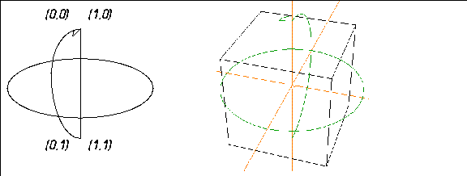

[N-World Contents] [Book Contents] [Prev] [Next] [Index]
Mappers
This chapter describes the concept of mappers and how to attach them to an object. A mapper is used to apply an image (such as a texture map, bump map, or opacity map) to all or part of an object.
In this Chapter
You'll learn about:
Mappers are N-Geometry objects through which you can project different types of images (such as texture maps) onto a 3D object.
Mappers are a special class of object that can be transformed and animated, but have no body.
The shape, orientation, and bounds of a mapper determines how the image is "projected" onto the object. You can, for example, project an image from one direction, wrap it around an entire object, or limit the projection to pre-defined face parts of an object.
The type of maps that can be applied to an object depend on the render domain you are using to render the object. For example, the GL Shade domain supports few mapping options, but can display an object interactively on the SGI. N·World's default N-Render domain supports texture, bump, opacity, reflection, and refraction maps, but must render objects a single frame at a time.
You specify the image to be projected onto an image in the Attributes Editor to project or wrap an image onto an object. When projected onto an object, an image is referred to as a map because the pixels in the 2D image are "mapped" to different locations on the 3D object.
Types of Mappers
N·World lets you attach the following types of mappers to an object or face part:
These mappers can be dynamic or frozen (as described in the section "Dynamic vs. Frozen Mappers," on page 18-11).
Mapper Icons
Each type of mapper is represented in the N-Geometry window by an icon. The lines of the mapper icon describe the location of the mapping image's edges in the projection.
Planar Mappers
In a planar mapper, points in the image are projected in parallel lines through space in the direction defined to be perpendicular to the mapper. This resembles how objects look when they are placed in the path of a slide projector beam.
To define how points in the image correspond to points in the mapper, pairs of numbers called UV coordinates are used. The U coordinate expresses the distance in the image from left to right, with 0 indicating the left side and 1 indicating the right side. The V coordinate describes positions from top to bottom, with 0 for the top and 1 for the bottom. Figure 18.1 shows a planar mapper with its UV coordinates labeled, and a planar mapper bounding an octahedron.
Figure 18.1 Left, a planar mapper with its UV coordinates labeled; right, a planar mapper bounding an octahedron
Cylindrical Mappers
In a cylindrical mapper, the image is wrapped cylindrically around the object; the left edge of the image "wraps around" the object until it meets the right edge.
The image thus appears to be "wrapped" around the object like the label of a can of soup, with the left edge of the image abutting the right edge. Figure 18.2 shows a cylindrical mapper with its UV coordinates labeled, and a cylindrical mapper bounding a cube.
Figure 18.2 Left, a cylindrical mapper with its UV coordinates labeled; right, a cylindrical mapper bounding a cube
Spherical Mappers
In a spherical mapper, the UV coordinates are arranged like the longitude and latitude lines of a globe. The relationship between the image and the mapper is therefore like the relationship between a grid of horizontal and vertical lines and a set of longitude and latitude lines on a globe.
The portions of the image near the top and bottom are compressed at the top and bottom of the spherical region of the mapper. Figure 18.3 shows a spherical mapper with its UV coordinates labeled, and a spherical mapper bounding a cube.

Figure 18.3 Left, a spherical mapper with its UV coordinates labeled; right, a spherical mapper bounding a cube.
Attaching Mappers
To attach a mapper to an object:
1. Create an icosahedron in N-Geometry.
Figure 18.4 Create an icosahedron
2. Open the Browser.
- The Browser is described in more detail in Getting Started.
3. (CLICK-L) on Geo.
4. (CLICK-R) on Icosahedron.
Figure 18.5 Select the object
- The following menu appears:
Figure 18.6 Creating a mapper
5. (CLICK-L) on Create Mapper.
- The following dialog box appears
Figure 18.7 Selecting the type of mapper
- Use the default parameters to generate the mapper; these parameters are described in detail in the N-Geometry Reference Guide, then (CLICK-L) on the Make Mapper button.
6. Look at the structure of the object in the browser.
- Note that Icosahedron changes to Icosahedron Group. The mapper is automatically attached to the object and restructured into a group.
Figure 18.8 The new object structure is reflected in the browser
7. (CLICK-L) on the black triangle next to Icosahedron group.
- You can see that both the original object and the mapper have been restructured into the group.
Figure 18.9 The object and the mapper are grouped
8. (CLICK-L) on the black triangle next to the Icosahedron.
- The browser also shows you which mapper is currently assigned to the object.
Figure 18.10 The object and the mapper are grouped
9. (CLICK-R) on the object in the Browser hierarchy again.
10. (CLICK-L) on Assign Material.
- Select from the list of currently loaded materials. (A number of preset materials are loaded every time N·World starts.)
Figure 18.11 Selecting a material
- If the material has more than one map associated with it (e.g. a texture map and a bump map, you need to specify the mapper through which each map should be applied:
Figure 18.12 Specifying mappers for each map in the material
- If there is only one mapper on the object, you can only apply the material through that mapper; however, if you have multiple mappers on an object, you can (CLICK-R) on the appropriate mapper field to specify the mapper through which each map should be applied.
11. Look in the browser again.
- If the material has an icon associated with it (has been previously saved), it is displayed in the hierarchy:
Figure 18.13 Object hierarchy displaying material
12. In N-Geometry, (CLICK-L) on objects on the element sensitivity menu.
13. (SHIFT-L) on the object, then (CLICK-L) on Shading to display the object in shaded mode.
Figure 18.14 Mapped object
- Note. Objects must be shaded for GL Shade mapping to be visible.
Dynamic vs. Frozen Mappers
When you create a mapper, it is by default dynamic-it can be animated just like any other object, independently of the object to which it was assigned. There is no fixed relationship between the object and the mapper. However, N-Geometry also lets you fix the relationship between the mapper and the object through a process called "Freezing" the mapper.
Dynamic Mappers
When you first create a mapper, that mapper is dynamic-that is, it is an object that can still be transformed or animated. If you transform a mapper, you change how the image is projected onto the surface of the object.
A dynamic mapper can be animated in N-Dynamics like other objects. With a dynamic planar mapper, for example, if the object's transformation is animated differently than that of the mapper, the mapped image will slide along the surface of the object, and the object will look like it's passing through the beam of a slide projector.
You can use dynamic mappers to your advantage to simulate motion without ever moving the object; for example, you could project a map of a wheel onto the wheel of a car model, then rotate the mapper to create the illusion that the wheel was spinning.
Try this:
1. (CLICK-L) on objects on the element sensitivity menu.
2. (SHIFT-L) on the mapper in the N-Geometry window, then (CLICK-L) on Rotate>Y.
- Move the mouse back and forth...note that the mapper icon rotates, as does the projection of the image onto the object.
Figure 18.15 Left, untransformed mapper; right, mapper rotated on its Y axis
As mentioned above, animating a mapper is an easy way to create the illusion of movement for an object.
Here's one more experiment that may help you understand the relationship between a dynamic mapper and an object :
3. In the N-Geometry window, (SHIFT-L) on the Icosahedron's spherical mapper, then (CLICK-L) on Home.
- This returns the mapper to its original position.
4. (CLICK-L) on points on the element sensitivity menu.
5. (SHIFT-L) on the point on top of the icosahedron, then (CLICK-L) on Move.
- Move the point around. Note that the point appears to move "underneath" the projected map.
Figure 18.16 Left, original object; right, moving a point on the object
With a dynamic mapper, the image is projected inward from the mapper in the same way, even if you modify the geometry of the object.
Freezing the Mapper
You might prefer, however, to fix the relationship of the mapper image to the surface of the object. If the surface of your object is going to deform (like the skin on a skeleton), you'll probably want to freeze the mapper so that the same portion of the map always stays with the same face.
When you freeze a mapper, N-Geometry actually creates a copy of the dynamic mapper and applies it to the object. That way, you can always revert to the dynamic mapper if you wish to do so.
When you animate an object with a frozen mapper, the map image always remains in the same position on the surface of the object. Because a frozen mapper represents a fixed mapping relationship, no visible mapper icon exists for a frozen mapper. You cannot animate a frozen mapper.
Let's freeze the mapper on our icosahedron:
1. Open the Browser.
2. (CLICK-R) on Icosahedron in the hierarchy.
3. (CLICK-L) on Freeze Mappers.
If you look at the hierarchy, you can see that a nerw mapper has been added to the object's structure:
Figure 18.17 Frozen mapper added to hierarchy
When you freeze a mapper, it is automatically made the mapper currently assigned to the object.
If you look in the N-Geometry window, you won't find any new icon for the frozen mapper, because it cannot be transformed separately from the object to which it is frozen.
4. (CLICK-L) on points on the element sensitivity menu.
5. (SHIFT-L) on the point on top of the icosahedron, then (CLICK-L) on Move.
- Move the point around. Note that this time, the map's coordinates remain fixed onto the surface of the object:
Figure 18.18 Left, original object; right, moving a point on the object with a fixed mapper
Positioning Mappers
Only dynamic mappers can be repositioned. Remember that when you freeze a mapper, you actually create a new mapper that does not have an icon and cannot be repositioned.
If it turns out that a frozen mapper is not positioned quite correctly:
1. Delete the frozen mapper.
2. Reposition the dynamic mapper.
3. Refreeze the dynamic mapper in its new position.
Attaching Mappers to Face Parts
You can apply mappers to a face part in the same way you apply them to an object.
To attach a mapper to a face part:
1. In the Browser, (CLICK-L) on the triangle to the right of the object containing the face part.
Figure 18.19 Object with face parts
2. (CLICK-R) on the face part to which you want to assign a mapper.
3. (CLICK-L) on Create Mapper.
After locating the face part in the object hierarchy, creating and assigning a mapper to a face part is identical to doing the same for an object.
Congratulations!
You've now created and assigned a mapper to an object, transformed a dynamic mapper, and frozen a dynamic mapper. You've also learned how to assign mappers to both objects or face parts, and how to reposition mappers.
[N-World Contents] [Book Contents] [Prev] [Next] [Index]
 Another fine product from Nichimen documentation!
Another fine product from Nichimen documentation!
Copyright © 1996, Nichimen Graphics Corporation. All rights
reserved.